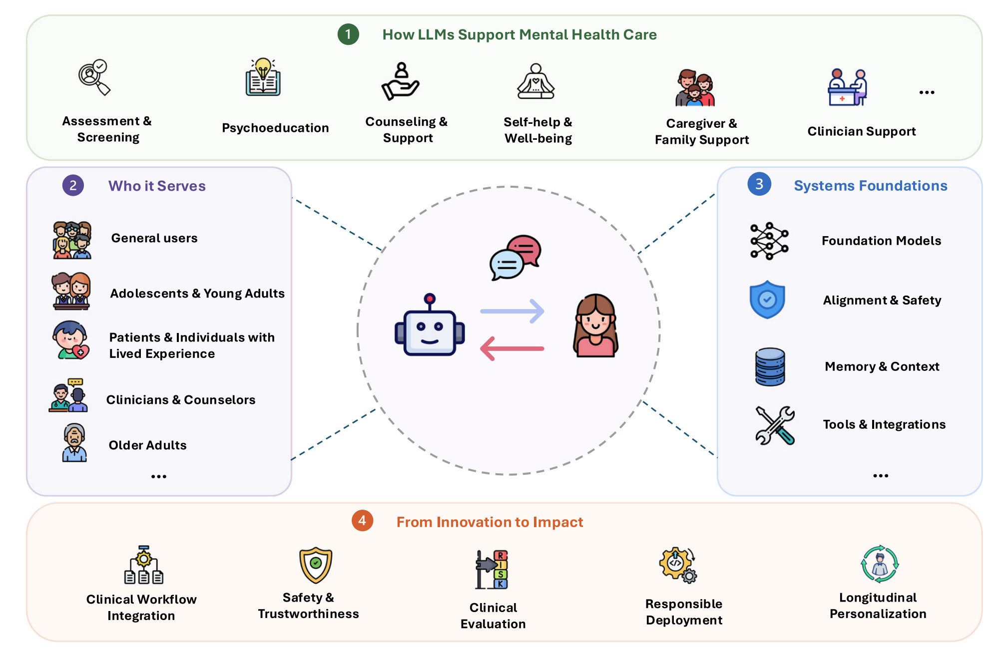
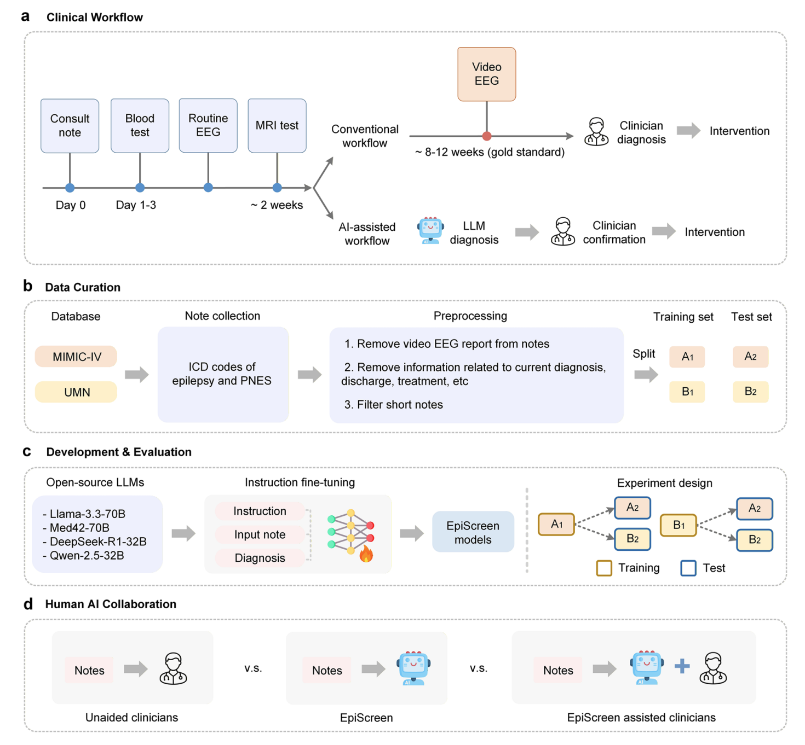
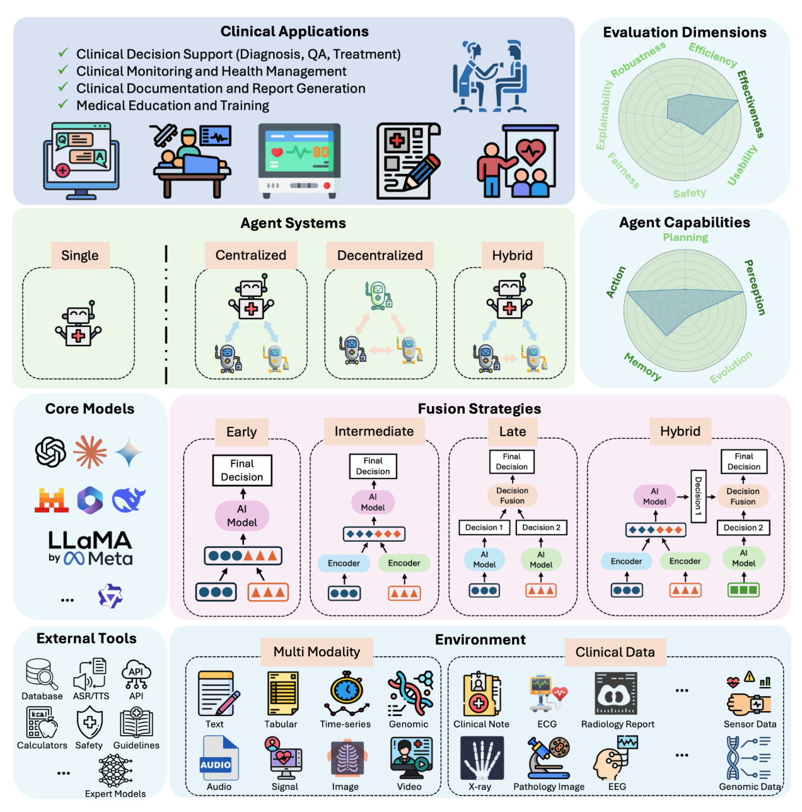
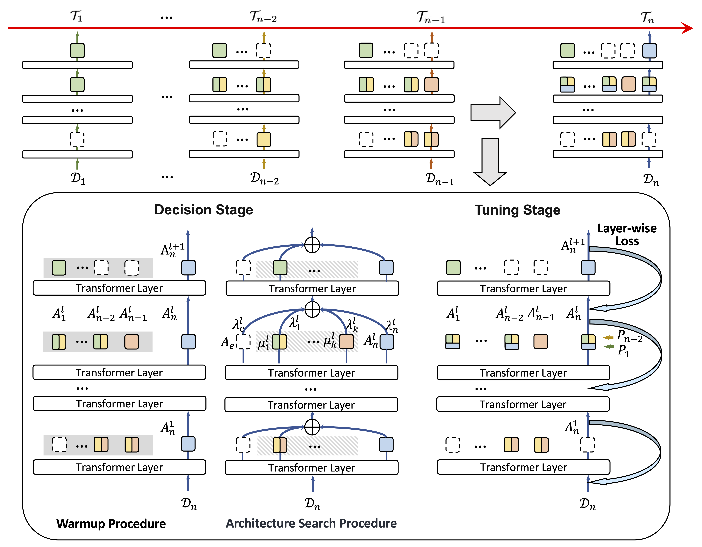
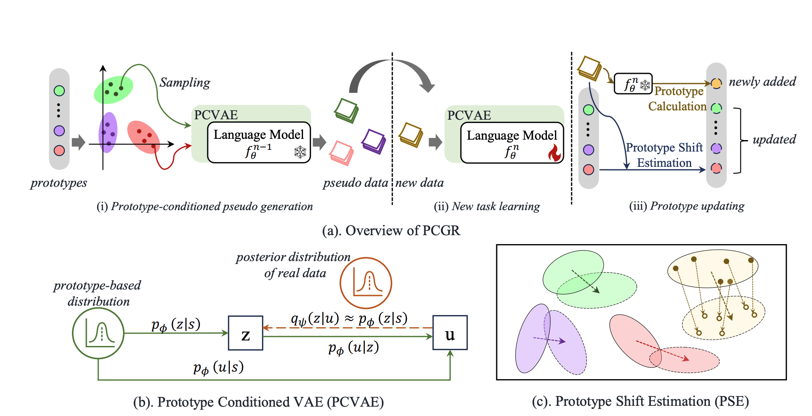
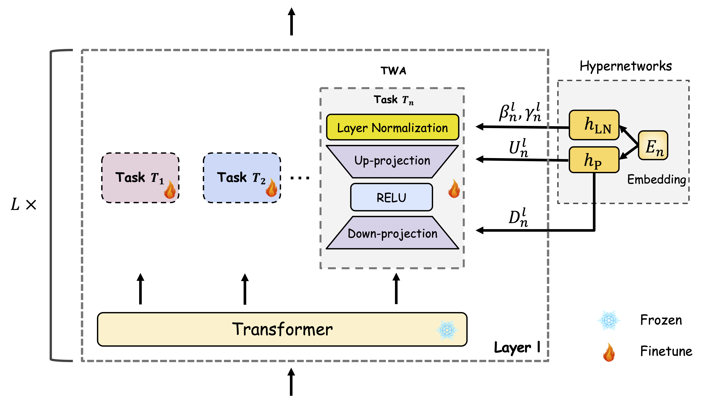
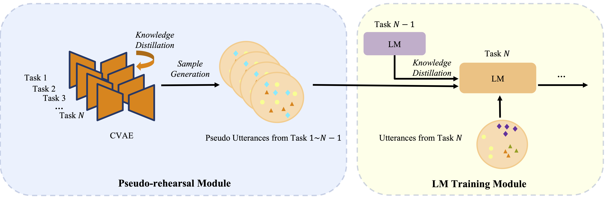
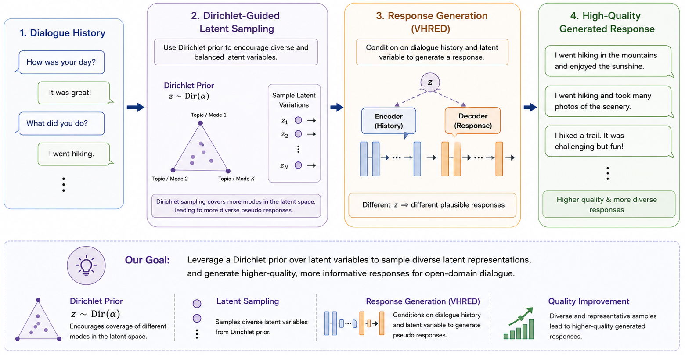
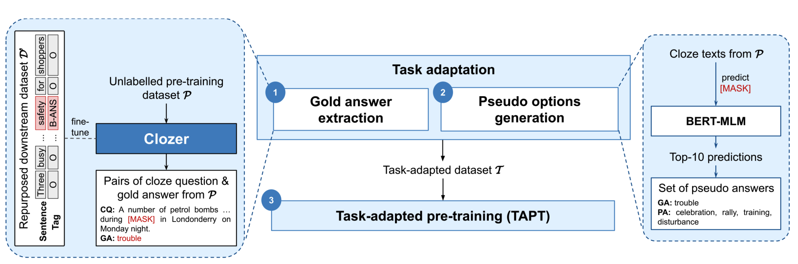
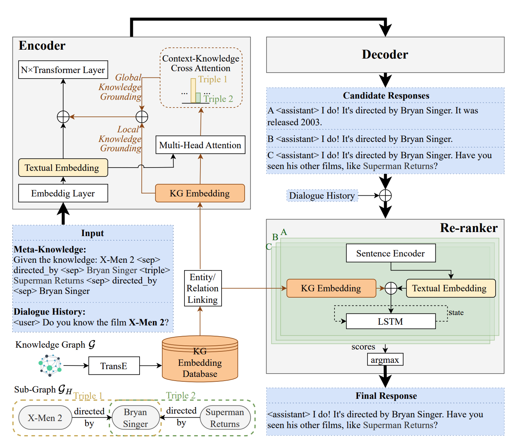

Min Zeng
I am Min Zeng, a Postdoctoral Research Associate at University of Minnesota, working with Prof. Rui Zhang. I received my Ph.D. in Electronic and Computer Engineering from HKUST, advised by Prof. Yike Guo, and my Master's degree in Computer Science and Engineering from Shanghai Jiao Tong University, advised by Prof. Yuan Luo.
I welcome collaborations with clinicians and researchers working on EHR data or continual learning. Feel free to reach out via email.
Research
Medicine never stands still: guidelines are revised, new evidence emerges, and patient records grow with every encounter. I build large language models that keep pace with this change—learning continually from evolving medical knowledge and reasoning over patient data in electronic health records (EHRs)—building on my Ph.D. work in continual learning for NLP.
01
Continual learning: from methods to evolving medical knowledge
Learning new knowledge without catastrophic forgetting: DCL (UAI’24), PCGR (NAACL’25), TCL (NAACL’25 Findings), and SAFM (EACL’26); MedCL-Bench (preprint) for biomedical continual learning; and evaluating whether LLMs incorporate revised clinical guidelines.
02
03
Memory for lifelong LLM systems
Deciding what LLM systems should retain, replace, or forget under limited memory, with applications to longitudinal patient records.
News
- Oct 2026 Large language models for digital mental health: an HCI-centered scoping review is published in npj Digital Medicine.
- Oct 2026 Early epilepsy detection from electronic health records with large language models is published in npj Digital Medicine.
- Aug 2026 Multimodal artificial intelligence agents in healthcare: a scoping review is published in npj Digital Medicine.
- Jan 2026 Sparse Adapter Fusion for Continual Learning in NLP is accepted to EACL 2026.
- Jan 2026 Serving as Area Chair for ACL Rolling Review.
- Jun 2025 Joined the University of Minnesota as a Postdoctoral Research Associate with Prof. Rui Zhang.
- May 2025 Completed my Ph.D. at HKUST.
Selected Publications [Full List]
* Equal contribution.
Recent Preprints
-
Large language models exhibit unreliable updating of clinical judgment as
patient evidence evolves
arXiv, 2026 -
MedCL-Bench: Benchmarking stability–efficiency trade-offs and scaling in
biomedical continual learning
arXiv, 2026
AI for Healthcare


Continual Learning for Language Models




Earlier Work in NLP



Services
Conference Area Chair: ACL Rolling Review (ARR), January 2026
Conference Reviewers: ACL, EMNLP, NAACL, UAI, EACL
Journal Reviewers: IEEE TASLP, npj Digital Medicine, npj Health Systems
Academic Service: AMIA 2025 NLP Year-in-Review Volunteer